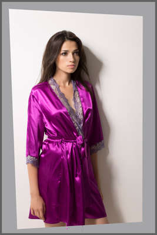
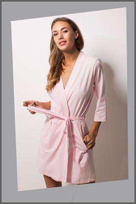

Здесь вы можете купить женские халаты оптом напрямую у производителя. Мы предлагаем гибкие условия, высокое качество и низкие цены. Швейная фабрика Арко ирис - специализируется на производстве женского белья и домашней одежды. В том числе мы производим сатиновые и трикотажные женские халаты.
На производстве мы используем самое современное автоматическое оборудование и высококачественные немецкие нити. Ткани, кружево и материалы закупаются у ведущих мировых производителей. Каждое изделие проходит проверку линий швов и общего качества. Таким образом мы гарантируем низкие оптовые цены и качественную продукцию.
Женские домашние халаты оптом
Мы регулярно расширяем ассортимент изделий добавляя новые модели, цвета тканей и кружева. Наши дизайнеры разрабатывают новые коллекции следуя за модными тенденциями успешно зарекомендовавшими себя по всему миру, паралельно развивая новые, смелые и оригинальные направления стиля.
Купить женские атласные халаты оптом

Нежные шелковые, атласные и стрейч сатиновые ткани в сочетании с изысканным кружевом позволяют создавть неотразимые и сексуальные женские халаты. Однако работа с такими материалами требует большого опыта, мастерства, точности и внимательности от всех сотрудников учавствующих в производстве. Разрабатывая и конструируя женские домашние халаты мы используем новейшие размерные антропометрические типологии населения Украины. Все наши изделия отлично сидят на фигурах украинских красавиц. Продукция швейной фабрики Арко ирис всегда высокого качества. Вы можете в этом убедится и купить женские атласные халаты оптом прямо сейчас.
Купить женские трикотажные халаты оптом
Также мы производим женскую домашнюю одежду, пижамы и халаты из трикотажа, ночные рубашки, бодики, комбидрессы и трусы. Одним из основных принципов компании арко ирис является персонализированный подход к каждому нашему партнеру и это позволяет вам купить оптом трикотажные халаты и женскую домашнюю одежду не только полными ростовками, но и выбирать нужные вам на данный момент размеры. Широкий ассортимент домашней одежды и низкие цены на домашнюю женскую одежду и нижнее белье не оставят вас равнодушными.

Менеджеры отдела продаж помогут вам выбрать самые ходовые модели, быстро и легко сформировать заказ и расскажут вам о готовящихся новинках. Минимальный заказ от 2000 гривен. Мы находимся в Киеве. По Украине заказы отправляем новой почтой. Швейная фабрика Арко ирис приглашает вас стать нашим партнером и сделать свой заказ сегодня.
Купить женские халаты оптом на швейной фабрике арко ирис - лучший выбор по лучшим оптовым ценам.
Выбрать, заказать и купить нашу продукцию можно по телефонам:
+380977086910, +380937106055, +380639932507
или оставив заявку на почте:
9932507@ukr.net